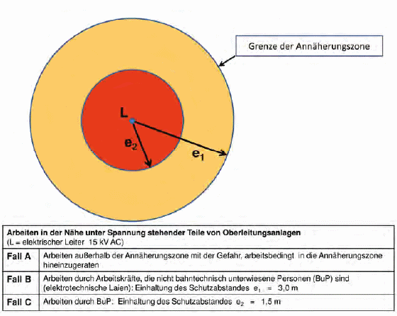

Anhang 10
Abkürzungen und Definitionen
- Arbeiten in der Nähe des Gleisbereichs sind Arbeiten, bei denen ein Hineingeraten von
Personen, Werkzeugen oder Maschinen in den Gleisbereich zu erwarten ist oder nicht ausgeschlossen
werden kann, dabei ist auch unbeabsichtigtes Verhalten zu berücksichtigen.
- Arbeiten in der Nähe unter Spannung stehender Teile sind Tätigkeiten aller Art, bei denen
eine Person mit Körperteilen oder Gegenständen den definierten Schutzabstand von unter
Spannung stehenden Teilen, gegen deren direktes Berühren kein vollständiger Schutz
besteht, – auch durch unbeabsichtigtes Verhalten – unterschreiten kann, ohne unter
Spannung stehende Teile zu berühren oder bei Nennspannungen über 1 kV die Gefahrenzone
zu erreichen, vgl. Abb. Anhang 10.
- ArbSchG: Arbeitsschutzgesetz
- ASR: Technische Regeln für Arbeitsstätten
- AWS: Automatisches Warnsystem
- Bahntechnisch unterwiesene Person (BuP) ist, wer bezüglich der ihr übertragenen Aufgaben
über die möglichen Gefahren bei unsachgemäßem Verhalten unterrichtet sowie über
die notwendigen Verhaltensregeln belehrt wurde. Die bahntechnische Unterweisung erfolgt
durch Personen (Elektrofachkraft (Efk) oder elektrotechnisch unterwiesene Person
(EuP) für Oberleitungsanlagen), die aufgrund ihrer Ausbildung, Kenntnisse und Erfahrungen
die möglichen Gefahren, insbesondere aus dem elektrischen Bahnbetrieb, erkennen
und beurteilen können. Bahntechnisch unterwiesene Personen dürfen selbständig keine
Arbeiten an elektrischen Anlagen und an Fahrleitungsanlagen ausführen.
- Benachbartes Gleis: ein benachbartes Gleis im Sinne dieser Schrift ist ein Gleis neben
dem Arbeitsgleis bzw. neben dem Arbeitsbereich, von dem – abhängig von der Tätigkeit –
eine Gefahr für die Arbeitsstelle ausgehen kann oder in dem der Bahnbetrieb durch die
Arbeiten gefährdet werden kann. Ein benachbartes Gleis kann ein Nachbargleis sein, kann
aber auch weiter entfernt sein als ein Nachbargleis.
- Betra: Betriebs- und Bauanweisung
- BetrSichV: Betriebssicherheitsverordnung
- BzS: für den Bahnbetrieb zuständige Stelle
- DB: Deutsche Bahn AG
- EBO: Eisenbahn- Bau- und Betriebsordnung
- FA: Feste Absperrung
- FV: Fließbandverfahren, d. h. Einsatz von Bettungsreinigungsmaschinen, Planumsverbesserungsmaschinen, Gleisumbauzügen
- G 20: DGUV Grundsatz für arbeitsmedizinische Vorsorgeuntersuchung „Lärm“
- Indusi: Induktive Zugsicherung
- La-Stelle: Langsamfahrstelle
- Lf-Signal: Langsamfahrsignal
- Lü: Sendung mit Lademaßüberschreitung
- MIE: Mobile Instandhaltungseinheit
- Nachbargleis: Gemäß GUV-R 2150 [16] sind Nachbargleise nebeneinander liegende Gleise
mit einem Sicherheitsraum von weniger als 0,8 m zwischen den Gefahrenbereichen (vgl.
Anhang 3).
- RIMINI-Verfahren: Verfahren zur risikominimalen Sicherung von Arbeitsstellen der DB Netz
AG [25]
- Ro: Rottenwarnsignale
- Ro 1: „Vorsicht! Im Nachbargleis nähern sich Fahrzeuge!“
- Ro 2: „Arbeitsgleise räumen!“
- Ro 3: „Arbeitsgleise schnellstens räumen!“
- Sicherheitsmaßnahme: Maßnahme zum Schutz der Beschäftigten, z. B. vor den Gefahren
des elektrischen Stroms
- Sicherungsmaßnahme: Maßnahme zum Schutz der Beschäftigten vor sich bewegenden
Schienenfahrzeugen
- Schutzabstand ist die Zone um unter elektrischer Spannung stehende Teile ohne Schutz
gegen direktes Berühren, der von Personen oder von Personen gehandhabten Werkzeugen,
Geräten, Hilfsmitteln und Materialien nicht unterschritten werden darf. Der Schutzabstand
ist abhängig von der Spannung, der Art der Tätigkeit, der verwendeten Ausrüstung
und dem Personenkreis, vgl. Abb. auf der Folgeseite.
- SiPo: Sicherungsposten
- SM: Stopfmaschine
- SO: Schienenoberkante
- SSP: Schnellschotterplaniermaschine
- UVV: Unfallverhütungsvorschrift
- Zw-Bagger: Zweiwegebagger
Definition: Arbeiten in der Nähe unter Spannung stehender Teile von Oberleitungsanlagen
